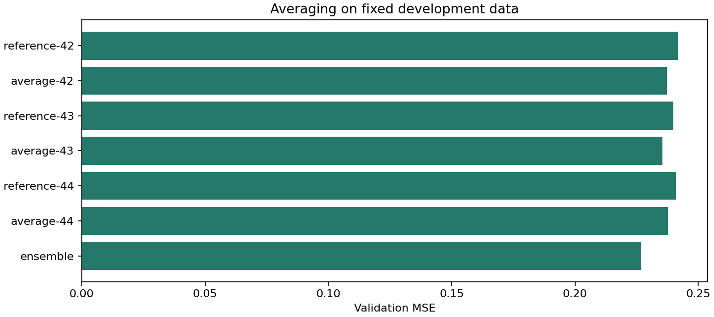
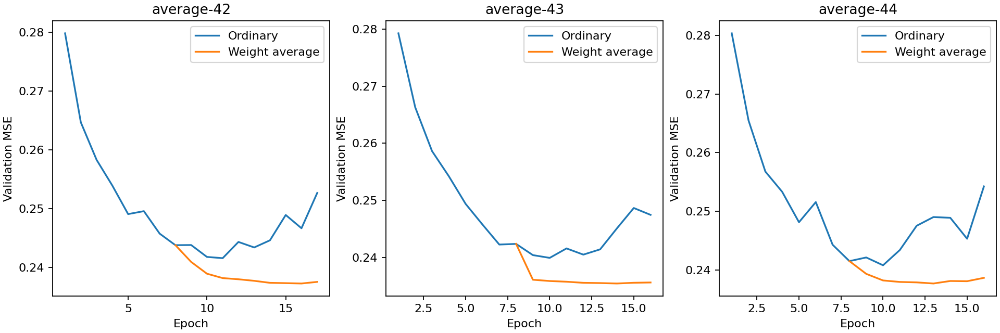

Reference mean MSE 0.240760; weight-average mean 0.236791. Reduction 1.65%; improving seeds 3/3. Adopt weight averaging: False.
Same positions, labels, architecture and optimizer. Ordinary-model losses and final/best weights reproduced within the frozen tolerance. Average snapshots beginning after epoch 8; ordinary validation controls early stopping. The ensemble is an average of predictions, not weights. Its error cannot exceed mean member error on the same records, but need not beat every member.
| Predictor | MSE | MAE | Signed error | Inference µs |
|---|---|---|---|---|
| reference-42 | 0.241584 | 0.320843 | 0.022675 | 64.8 |
| average-42 | 0.237273 | 0.312875 | 0.000128 | 65.2 |
| reference-43 | 0.239907 | 0.319704 | -0.009060 | 64.7 |
| average-43 | 0.235418 | 0.314282 | -0.026502 | 64.8 |
| reference-44 | 0.240788 | 0.318594 | -0.011287 | 64.8 |
| average-44 | 0.237683 | 0.314671 | -0.005545 | 64.9 |
| ensemble | 0.226863 | 0.311478 | 0.000776 | 192.5 |


| Predictor | Comparator | 95% MSE difference interval | 95% MAE difference interval |
|---|---|---|---|
| average-42 | reference | [-0.00640023995556834, -0.0023386177486547552] | [-0.00965347643635657, -0.006364847949879077] |
| average-43 | reference | [-0.0064090836637395515, -0.002525266645188434] | [-0.006933244281665353, -0.0037493300913103477] |
| average-44 | reference | [-0.004995195618254722, -0.001337665712675491] | [-0.0053403319989970095, -0.002529312831416057] |
| ensemble | 42 | [-0.017886620896914236, -0.011431625008852248] | [-0.01164180010617957, -0.007078489952837406] |
| ensemble | 43 | [-0.015978143529293304, -0.010106123470577297] | [-0.010475741585115772, -0.005956574120404328] |
| ensemble | 44 | [-0.016982118977134697, -0.010947043857677821] | [-0.00947293384919555, -0.004880569709420809] |
| ensemble | mean member loss | [-0.014462273165648645, -0.013336056896269636] | [-0.008882570137387002, -0.007571263931816223] |
2,000 resamples of source games; predictions compared on the same draws. Intervals condition on these selected models and do not correct repeated-validation selection. Differences below zero favor averaging. Seed-level entries remain separate; the ensemble is one predictor.
| Predictor | Group | Positions/games | MSE | MAE |
|---|---|---|---|---|
| reference-42 | black | 5001/2063 | 0.248103 | 0.327089 |
| reference-42 | white | 4788/2056 | 0.234776 | 0.314320 |
| average-42 | black | 5001/2063 | 0.242253 | 0.318617 |
| average-42 | white | 4788/2056 | 0.232071 | 0.306877 |
| reference-43 | black | 5001/2063 | 0.249393 | 0.328083 |
| reference-43 | white | 4788/2056 | 0.230000 | 0.310953 |
| average-43 | black | 5001/2063 | 0.244750 | 0.322093 |
| average-43 | white | 4788/2056 | 0.225671 | 0.306123 |
| reference-44 | black | 5001/2063 | 0.248139 | 0.324528 |
| reference-44 | white | 4788/2056 | 0.233111 | 0.312395 |
| average-44 | black | 5001/2063 | 0.245449 | 0.320788 |
| average-44 | white | 4788/2056 | 0.229571 | 0.308282 |
| ensemble | black | 5001/2063 | 0.234076 | 0.318143 |
| ensemble | white | 4788/2056 | 0.219329 | 0.304516 |
| Predictor | Group | Positions/games | MSE | MAE |
|---|---|---|---|---|
| reference-42 | endgame | 1571/819 | 0.207583 | 0.235999 |
| reference-42 | middlegame | 3891/1970 | 0.288273 | 0.338429 |
| reference-42 | opening | 4327/2193 | 0.211945 | 0.335834 |
| average-42 | endgame | 1571/819 | 0.207109 | 0.231839 |
| average-42 | middlegame | 3891/1970 | 0.285641 | 0.330582 |
| average-42 | opening | 4327/2193 | 0.204730 | 0.326373 |
| reference-43 | endgame | 1571/819 | 0.208362 | 0.236457 |
| reference-43 | middlegame | 3891/1970 | 0.284127 | 0.333192 |
| reference-43 | opening | 4327/2193 | 0.211596 | 0.337800 |
| average-43 | endgame | 1571/819 | 0.206838 | 0.232538 |
| average-43 | middlegame | 3891/1970 | 0.280627 | 0.330227 |
| average-43 | opening | 4327/2193 | 0.205142 | 0.329622 |
| reference-44 | endgame | 1571/819 | 0.208085 | 0.232676 |
| reference-44 | middlegame | 3891/1970 | 0.287047 | 0.334116 |
| reference-44 | opening | 4327/2193 | 0.211064 | 0.335829 |
| average-44 | endgame | 1571/819 | 0.204765 | 0.228957 |
| average-44 | middlegame | 3891/1970 | 0.284988 | 0.330992 |
| average-44 | opening | 4327/2193 | 0.207096 | 0.331115 |
| ensemble | endgame | 1571/819 | 0.198552 | 0.230996 |
| ensemble | middlegame | 3891/1970 | 0.270620 | 0.329139 |
| ensemble | opening | 4327/2193 | 0.197794 | 0.324816 |
| Predictor | Group | Positions/games | MSE | MAE |
|---|---|---|---|---|
| reference-42 | [.25,.5) | 392/360 | 0.133901 | 0.275524 |
| reference-42 | [.5,.75) | 411/379 | 0.234118 | 0.365604 |
| reference-42 | [.75,1] | 6447/2072 | 0.284253 | 0.325618 |
| reference-42 | [0,.25) | 2539/1371 | 0.151073 | 0.308471 |
| average-42 | [.25,.5) | 392/360 | 0.131380 | 0.271852 |
| average-42 | [.5,.75) | 411/379 | 0.235385 | 0.363204 |
| average-42 | [.75,1] | 6447/2072 | 0.277552 | 0.314164 |
| average-42 | [0,.25) | 2539/1371 | 0.151650 | 0.307787 |
| reference-43 | [.25,.5) | 392/360 | 0.140129 | 0.281132 |
| reference-43 | [.5,.75) | 411/379 | 0.237013 | 0.359858 |
| reference-43 | [.75,1] | 6447/2072 | 0.280644 | 0.322050 |
| reference-43 | [0,.25) | 2539/1371 | 0.152341 | 0.313204 |
| average-43 | [.25,.5) | 392/360 | 0.136941 | 0.270999 |
| average-43 | [.5,.75) | 411/379 | 0.234500 | 0.358913 |
| average-43 | [.75,1] | 6447/2072 | 0.276530 | 0.318477 |
| average-43 | [0,.25) | 2539/1371 | 0.146381 | 0.303088 |
| reference-44 | [.25,.5) | 392/360 | 0.145417 | 0.291245 |
| reference-44 | [.5,.75) | 411/379 | 0.236951 | 0.365678 |
| reference-44 | [.75,1] | 6447/2072 | 0.284120 | 0.324102 |
| reference-44 | [0,.25) | 2539/1371 | 0.146108 | 0.301207 |
| average-44 | [.25,.5) | 392/360 | 0.139426 | 0.281583 |
| average-44 | [.5,.75) | 411/379 | 0.230682 | 0.358312 |
| average-44 | [.75,1] | 6447/2072 | 0.279928 | 0.318886 |
| average-44 | [0,.25) | 2539/1371 | 0.146717 | 0.302012 |
| ensemble | [.25,.5) | 392/360 | 0.119186 | 0.258459 |
| ensemble | [.5,.75) | 411/379 | 0.217282 | 0.353611 |
| ensemble | [.75,1] | 6447/2072 | 0.272524 | 0.323782 |
| ensemble | [0,.25) | 2539/1371 | 0.129099 | 0.281601 |
| Predictor | Group | Positions/games | MSE | MAE |
|---|---|---|---|---|
| reference-42 | 0-8 | 1768/761 | 0.186599 | 0.230774 |
| reference-42 | 17+ | 5831/2099 | 0.253798 | 0.359127 |
| reference-42 | 9-16 | 2190/1186 | 0.253455 | 0.291624 |
| average-42 | 0-8 | 1768/761 | 0.186112 | 0.225881 |
| average-42 | 17+ | 5831/2099 | 0.248574 | 0.350262 |
| average-42 | 9-16 | 2190/1186 | 0.248486 | 0.283559 |
| reference-43 | 0-8 | 1768/761 | 0.194026 | 0.234703 |
| reference-43 | 17+ | 5831/2099 | 0.253396 | 0.359171 |
| reference-43 | 9-16 | 2190/1186 | 0.241031 | 0.283243 |
| average-43 | 0-8 | 1768/761 | 0.190756 | 0.229615 |
| average-43 | 17+ | 5831/2099 | 0.248174 | 0.352954 |
| average-43 | 9-16 | 2190/1186 | 0.237510 | 0.279667 |
| reference-44 | 0-8 | 1768/761 | 0.190885 | 0.231863 |
| reference-44 | 17+ | 5831/2099 | 0.254230 | 0.357797 |
| reference-44 | 9-16 | 2190/1186 | 0.245285 | 0.284231 |
| average-44 | 0-8 | 1768/761 | 0.188250 | 0.228696 |
| average-44 | 17+ | 5831/2099 | 0.250719 | 0.353774 |
| average-44 | 9-16 | 2190/1186 | 0.242882 | 0.279966 |
| ensemble | 0-8 | 1768/761 | 0.180734 | 0.226985 |
| ensemble | 17+ | 5831/2099 | 0.238178 | 0.348491 |
| ensemble | 9-16 | 2190/1186 | 0.233976 | 0.281138 |
| Predictor | Group | Positions/games | MSE | MAE |
|---|---|---|---|---|
| reference-42 | 1-3 | 1710/969 | 0.356146 | 0.407295 |
| reference-42 | <=1 | 5079/1973 | 0.252618 | 0.379944 |
| reference-42 | >3 | 3000/1384 | 0.157604 | 0.171508 |
| average-42 | 1-3 | 1710/969 | 0.351824 | 0.396807 |
| average-42 | <=1 | 5079/1973 | 0.245708 | 0.371369 |
| average-42 | >3 | 3000/1384 | 0.157698 | 0.166002 |
| reference-43 | 1-3 | 1710/969 | 0.350053 | 0.401211 |
| reference-43 | <=1 | 5079/1973 | 0.252147 | 0.381080 |
| reference-43 | >3 | 3000/1384 | 0.156401 | 0.169336 |
| average-43 | 1-3 | 1710/969 | 0.344557 | 0.397004 |
| average-43 | <=1 | 5079/1973 | 0.245601 | 0.372880 |
| average-43 | >3 | 3000/1384 | 0.155969 | 0.167924 |
| reference-44 | 1-3 | 1710/969 | 0.355095 | 0.399005 |
| reference-44 | <=1 | 5079/1973 | 0.251710 | 0.379082 |
| reference-44 | >3 | 3000/1384 | 0.157143 | 0.170352 |
| average-44 | 1-3 | 1710/969 | 0.352565 | 0.394155 |
| average-44 | <=1 | 5079/1973 | 0.246703 | 0.374050 |
| average-44 | >3 | 3000/1384 | 0.156929 | 0.168838 |
| ensemble | 1-3 | 1710/969 | 0.339292 | 0.400196 |
| ensemble | <=1 | 5079/1973 | 0.231727 | 0.365425 |
| ensemble | >3 | 3000/1384 | 0.154545 | 0.169575 |
Common initialization: runs/fixed-data-improvements/combined-42/best.npz. This is seed 42 chosen before results, not the best seed. The ensemble will not initialize RL. Released models remain unchanged. Invocation time 230.8s; paid compute C$0. Latency includes board encoding, three warmed passes over up to 64 validation boards and one BLAS thread.
No stronger-play claim follows from these errors. Proceed to the approved RL pilot regardless of this outcome. Raw predictions and experimental checkpoints remain ignored; compact evidence and frozen protocol are available.